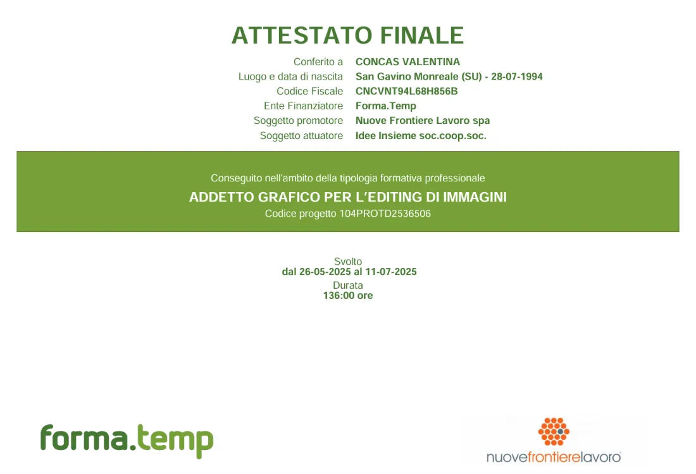
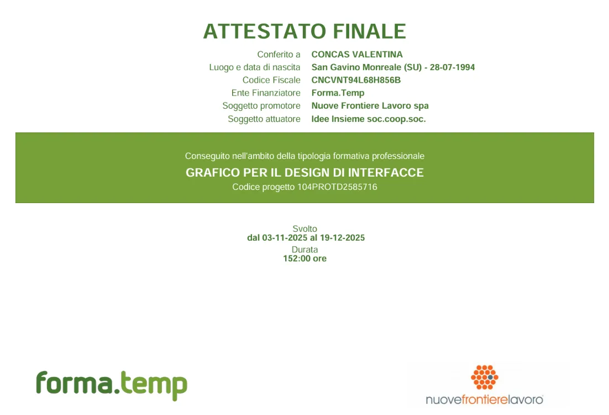

Branding • 3D
Nalema
Progetto candele con logo, brand identity e prodotti modellati in 3D.
Mi piace il design essenziale: quello semplice, pulito ma capace di farsi notare.
I miei progetti raccontano il mio stile e la mia evoluzione. Il mio pensiero visivo e le mie capacità sono un percorso in progress, che si arricchisce ad ogni nuova esperienza.
Progetto candele con logo, brand identity e prodotti modellati in 3D.
Progettazione interfaccia utente e sviluppo esecutivo su WordPress per un maneggio.
Rinnovo del marchio con creazione di Welcome Kit e merchandising renderizzato in 3D.
Ideazione del logo e landing page per un brand di orologi.
Sono una Junior Web & Graphic Designer all'inizio del mio percorso. Nei miei progetti cerco di unire creatività e logica, creando prodotti visivi essenziali, puliti e funzionali. Mi piace lavorare con ordine e metodo: prima di mettermi al grafico o al codice, parto sempre dall'analisi del prodotto, dai competitor e dal brainstorming. Sto muovendo i primi passi e sperimentando tra Web Design, Identità Visiva, Photo Editing e 3D, affrontando ogni nuova sfida con grande curiosità e voglia di crescere.
Il mio percorso nasce sui banchi delle superiori con l'indirizzo in Grafica Pubblicitaria. Dopo il diploma e alcune esperienze di lavoro a contatto con il pubblico, ho sentito l'esigenza di ampliare i miei orizzonti e mi sono iscritta all'Università in Informatica Umanistica. Lì ho scoperto il mondo del Web Design, unendo i linguaggi di codice alla progettazione visiva.
Questo ritorno alle origini mi ha fatto capire quanto la grafica mi mancasse. Ho poi consolidato le mie competenze con corsi di specializzazione certificati in interfacce, photo editing e 3D packaging.
Oggi mi affascina la connessione tra estetica e logica: ogni logo deve essere ragionato oltre che memorabile, e ogni sito deve risultare intuitivo e invitante. Con il tempo il mio gusto si è evoluto verso una filosofia less is more: prediligo estetiche semplici e pulite, arricchite da elementi di carattere che le rendono uniche.
Collaborazione per il restyling logo e la creazione di mockup UI/UX per interfacce web.
Specializzazione in Figma, UI/UX, Web Design, 3D Design e Adobe Dimension.

Progettazione di packaging bidimensionali alla realizzazione di prototipi e set tridimensionali completi, imparando ad applicare materiali, grafiche e illuminazione per valorizzare il prodotto.

Progettazione di interfacce digitali, design system e prototipazione avanzata su Figma.
Sei un'azienda o un'agenzia alla ricerca di un profilo Junior dinamico? Scrivimi pure!